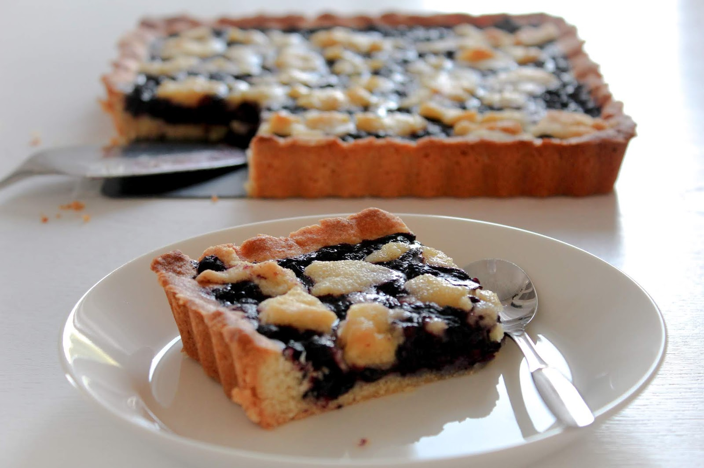

Mustikkapiirakka

Näin valmistat hyvän mustikkapiirakan. Tarvitsen seuraavia aineksia:
- 4 kananmunaa
- 3 dl sokeria
- 7 dl venhäjauhoja
- 1 rkl vaniljasokeria
- 3 tl leivinjauhetta
- 200 g margariinia
- 2 dl maitoa
- mustikoita oman maun mukaan
Valmistusvaiheet:
- Vatkaa munat ja sokeri kuohkeaksi vaahdoksi. Yhdistä kuivat aineet. Sulata margariini.
- Sekoita kuivat aineet, sula margariini ja maito vaahdon joukkoon vuorotellen. Sekoita kevyesti tasaiseksi taikinaksi.
- Vuoraa leivinpaperilla noin 25 x 35 cm:n kokoinen uunivuoka. Sekoita puolet mustikoista taikinan joukkoon ja valuta taikina tasaisesti vuoan pohjalle. Ripottele pinnalle loput mustikat.
- Kypsennä piirakkaa 200 asteessa uunin alatasolla 35-40 minuuttia. Anna jäähtyä hetken aikaa ennen vuoan irrottamista.
- Nauti mustikkapiirakasta!